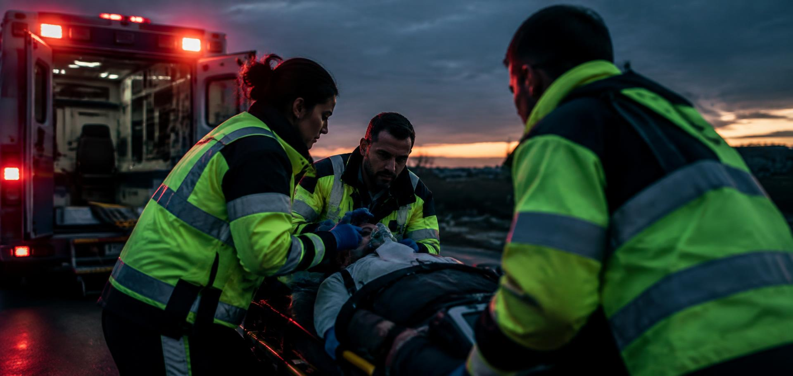

Tap the big red button to open the emergency screen, then press and hold to send your live GPS location to responders. You do not need to sign in.
Calls work even with no internet. SOS needs data or Wi-Fi for live location.
BEACON SEDI EMERGENCY APP links patients to emergency responders with one tap — sharing pinpoint GPS location and vital medical info on precise, end-to-end maps.
No account needed for emergencies · Medical profile persists when signed in
Example alert
Cardiac emergency
±4m
Accuracy
2:14
ETA
O−
Blood

On scene in minutes
Trained responders dispatched to your exact coordinates.
Hold to send. No forms, no fuss. Anonymous alerts work without an account.
High-accuracy GPS on Google Maps, streamed live to the responder dashboard.
Blood type, allergies, conditions and contacts arrive with your alert.